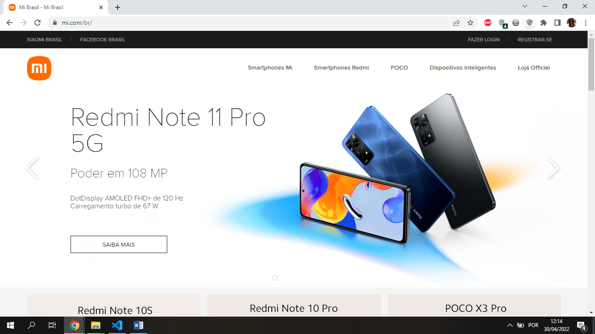
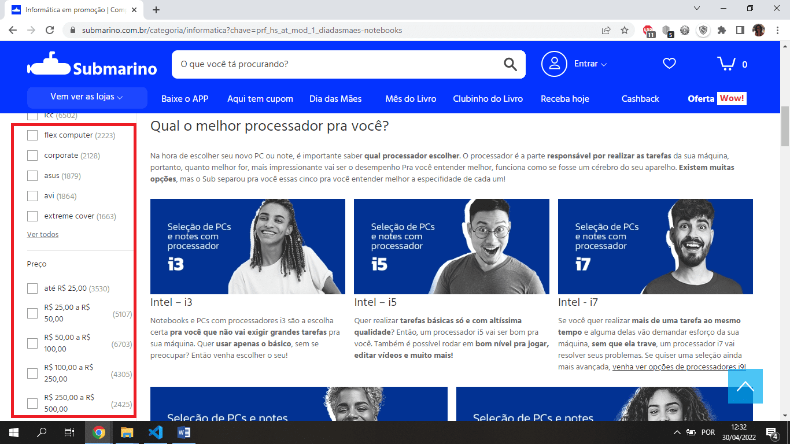
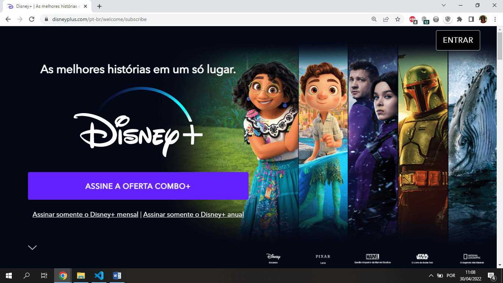

Design Principles Document
Livia Macêdo Pimentel
Visual Hierarchy
Xiaomi Brasil
mi.com
Once you understand the purpose of the site and the target audience, the visual hierarchy method will be used, which consists of organizing the elements in order of importance, directing what the user should look at first and so on, thus holding their attention, directing their traffic. and reducing navigation effort.
Hick's Law
Submarino
submarino.com.br
Hick's Law describes that the greater the number of options, the longer the user will take to make a decision, hence the importance of filters to limit the number of options.
Contrast
Disney+
disneyplus.com
Contrast is part of CARP (Contrast, Alignment, Repetition and Proximity) when well used, the user can understand what he is viewing without difficulty, as its objective is to capture the user's attention by distinguishing the elements on the page, making it visually more attractive , the contrast can be done through: color, shape, letter and positioning. When using this concept, it is necessary to be careful with the color saturation so that it does not disturb the user's eyes, which can cause the user to spend a short time on the page.